Understanding dsFlower: A Complete Guide
getting-started.RmdThe problem
You have patient data at three hospitals. You want to train a machine learning model that learns from all three datasets, but you cannot move the data out of each hospital. This is the standard federated learning setup, and it is exactly what DataSHIELD was designed to enable for statistical analysis.
dsFlower extends DataSHIELD to support federated learning, not just federated statistics. It does this by bridging two systems: DataSHIELD (which you already know) and Flower (a Python federated learning framework).
Two packages, two roles
dsFlower is split into two R packages that run on different machines:
dsFlowerClient runs on your laptop. It is the orchestrator. You use it to connect to servers, prepare data, start training, and collect results.
dsFlower runs on each Opal/Rock server. It receives instructions from dsFlowerClient, manages the local training processes, and enforces the server administrator’s disclosure controls. You never interact with it directly.
Two communication channels
dsFlower uses two completely separate network channels at the same time:

The control channel (top) is standard DataSHIELD over HTTPS. The training channel (bottom) is Flower’s gRPC protocol. Why two channels? Because DataSHIELD’s request-response model does not support the continuous, bidirectional communication that federated training needs.
Building blocks: specification objects
Before connecting to any server, dsFlowerClient lets you compose an experiment from four building blocks. These are plain R objects that describe what should happen, without triggering any computation:
library(dsFlowerClient)
# What kind of problem?
task <- ds.flower.task.classification()
task
#> dsflower_task: classification
# What model to train?
model <- ds.flower.model.sklearn_logreg(C = 1.0, max_iter = 200L)
model
#> dsflower_model: sklearn_logreg ( sklearn )
#> penalty = "l2"
#> C = 1
#> max_iter = 200L
# How to aggregate updates from nodes?
strategy <- ds.flower.strategy.fedavg(
fraction_fit = 1.0,
min_fit_clients = 3L,
min_available_clients = 3L
)
strategy
#> dsflower_strategy: FedAvg
#> fraction_fit = 1
#> fraction_evaluate = 1
#> min_fit_clients = 3L
#> min_available_clients = 3L
# Any privacy enhancements?
privacy <- ds.flower.privacy.research()
privacy
#> dsflower_privacy: researchThen you combine them into a recipe:
recipe <- ds.flower.recipe(
task = task,
model = model,
strategy = strategy,
privacy = privacy,
num_rounds = 5L,
target_column = "target",
feature_columns = c("f1", "f2", "f3", "f4", "f5")
)
recipe
#> dsflower_recipe
#> Task: classification
#> Model: sklearn_logreg ( sklearn )
#> Strategy: FedAvg
#> Privacy: research
#> Rounds: 5
#> Target: target
#> Features: f1, f2, f3, f4, f5The recipe is just a specification. Nothing runs until you call
ds.flower.run.start(). See
vignette("experiment-recipes") for all available models,
strategies, and privacy settings.
Live demo: federated learning across 3 sites
Everything that follows runs against three real Opal/Rock servers running in Docker. Each one holds a different partition of a synthetic classification dataset (200 rows each, 5 features, binary target).
Stage 1: Connect to the three Opal servers
library(DSI)
library(DSOpal)
builder <- DSI::newDSLoginBuilder()
builder$append(server = "site_a", url = "https://localhost:8443",
user = "administrator", password = "admin123",
driver = "OpalDriver",
options = "list(ssl_verifyhost=0, ssl_verifypeer=0)")
builder$append(server = "site_b", url = "https://localhost:8444",
user = "administrator", password = "admin123",
driver = "OpalDriver",
options = "list(ssl_verifyhost=0, ssl_verifypeer=0)")
builder$append(server = "site_c", url = "https://localhost:8445",
user = "administrator", password = "admin123",
driver = "OpalDriver",
options = "list(ssl_verifyhost=0, ssl_verifypeer=0)")
conns <- DSI::datashield.login(logins = builder$build(), assign = FALSE)
#>
#> Logging into the collaborating servers
cat("Connected to:", paste(names(conns), collapse = ", "), "\n")
#> Connected to: site_a, site_b, site_cStage 2: Initialize and inspect capabilities
init_result <- ds.flower.nodes.init(
conns, resource = "dsflower_test.flower_node", symbol = "flower"
)
# What does each site have?
caps <- DSI::datashield.aggregate(
conns, expr = quote(flowerGetCapabilitiesDS("flower"))
)
for (srv in names(caps)) {
cat(sprintf(" %s: %d rows x %d cols | Python %s | Flower %s | Docker: %s\n",
srv, caps[[srv]]$data_n_rows, caps[[srv]]$data_n_cols,
caps[[srv]]$python_version, caps[[srv]]$flower_version,
caps[[srv]]$is_docker))
}
#> site_a: 200 rows x 6 cols | Python 3.12.3 | Flower 1.27.0 | Docker: TRUE
#> site_b: 200 rows x 6 cols | Python 3.12.3 | Flower 1.27.0 | Docker: TRUE
#> site_c: 200 rows x 6 cols | Python 3.12.3 | Flower 1.27.0 | Docker: TRUEEach server reports its data shape, Python version, and Flower
version. The is_docker = TRUE flag tells dsFlowerClient to
use host.docker.internal as the SuperLink address (instead
of the host’s LAN IP).
Stage 3: Prepare training data
prep <- ds.flower.nodes.prepare(
conns, symbol = "flower",
target_column = "target",
feature_columns = c("f1", "f2", "f3", "f4", "f5")
)
for (srv in names(prep$per_site)) {
cat(sprintf(" %s: prepared = %s\n", srv, prep$per_site[[srv]]$prepared))
}
#> site_a: prepared = TRUE
#> site_b: prepared = TRUE
#> site_c: prepared = TRUEOn each server, this validates the columns exist, checks the row count against the disclosure threshold, and stages the data into a temporary directory that the Python SuperNode will read.
Stage 4: Start the SuperLink (insecure mode)
quiet(ds.flower.superlink.start(insecure = TRUE))
Sys.sleep(2)
status <- ds.flower.superlink.status()
cat(sprintf("SuperLink running: %s\n", status$running))
#> SuperLink running: TRUE
cat(sprintf(" Fleet API: %s\n", status$fleet_address))
#> Fleet API: 127.0.0.1:9092
cat(sprintf(" Insecure mode: %s\n", status$insecure))
#> Insecure mode: TRUE
cat(sprintf(" TLS certificate: %s\n",
ifelse(is.null(status$ca_cert_pem), "none (insecure)", "present")))
#> TLS certificate: none (insecure)
cat(sprintf(" Federation ID: %s\n", status$federation_id))
#> Federation ID: fl-ieexombeu7fdThe SuperLink runs on your machine. It listens on port 9092 for
SuperNode connections and on port 9093 for flwr run
commands.
Stage 5: Connect the three nodes
quiet(ensure <- ds.flower.nodes.ensure(conns, symbol = "flower"))
#> Warning: site_c cannot reach SuperLink at host.docker.internal:9092
#> (There are some DataSHIELD errors, list them with datashield.errors())
#> Warning: Some nodes failed connectivity check: site_c. Consider providing
#> per-node superlink_address for those nodes.
for (srv in names(ensure$per_site)) {
cat(sprintf(" %s: node_ensured = %s\n", srv, ensure$per_site[[srv]]$node_ensured))
}
#> site_a: node_ensured = TRUE
#> site_b: node_ensured = TRUE
#> site_c: node_ensured = TRUE
cat("\nWaiting for SuperNodes to register with SuperLink...\n")
#>
#> Waiting for SuperNodes to register with SuperLink...
Sys.sleep(10)
cat("Ready.\n")
#> Ready.Each Opal receives the SuperLink address, verifies connectivity, and
spawns a flower-supernode process that connects to your
SuperLink via gRPC.
Stage 6: Train a model across 3 sites
recipe_lr <- ds.flower.recipe(
task = ds.flower.task.classification(),
model = ds.flower.model.sklearn_logreg(C = 1.0),
strategy = ds.flower.strategy.fedavg(
min_fit_clients = 3L,
min_available_clients = 3L
),
num_rounds = 3L,
target_column = "target",
feature_columns = c("f1", "f2", "f3", "f4", "f5")
)
cat("Training logistic regression across 3 sites (3 rounds)...\n\n")
#> Training logistic regression across 3 sites (3 rounds)...
run1 <- ds.flower.run.start(recipe_lr, verbose = TRUE)
#> Flower App configuration warnings in '/private/var/folders/tn/qg45ss_91k375mrb66zqhx_m0000gn/T/RtmpMMquhd/dsflower_app/sklearn_logreg/pyproject.toml':
#> - Recommended property "description" missing in [project]
#> - Recommended property "license" missing in [project]
#> 🎊 Successfully started run 12394865800874772647
#> INFO : Start `flwr-serverapp` process
#> 🎊 Successfully installed sklearn_logreg to /var/folders/tn/qg45ss_91k375mrb66zqhx_m0000gn/T/RtmpMMquhd/dsflower_superlink/apps/dsflower.sklearn_logreg.0.1.0.9921d28d.
#> INFO : Starting Flower ServerApp, config: num_rounds=3, no round_timeout
#> INFO :
#> INFO : [INIT]
#> INFO : Requesting initial parameters from one random client
#> INFO : Received initial parameters from one random client
#> INFO : Starting evaluation of initial global parameters
#> INFO : Evaluation returned no results (`None`)
#> INFO :
#> INFO : [ROUND 1]
#> INFO : configure_fit: strategy sampled 3 clients (out of 3)
#> INFO : aggregate_fit: received 3 results and 0 failures
#> WARNING : No fit_metrics_aggregation_fn provided
#> INFO : configure_evaluate: strategy sampled 3 clients (out of 3)
#> INFO : aggregate_evaluate: received 3 results and 0 failures
#> WARNING : No evaluate_metrics_aggregation_fn provided
#> INFO :
#> INFO : [ROUND 2]
#> INFO : configure_fit: strategy sampled 3 clients (out of 3)
#> INFO : aggregate_fit: received 3 results and 0 failures
#> INFO : configure_evaluate: strategy sampled 3 clients (out of 3)
#> INFO : aggregate_evaluate: received 3 results and 0 failures
#> INFO :
#> INFO : [ROUND 3]
#> INFO : configure_fit: strategy sampled 3 clients (out of 3)
#> INFO : aggregate_fit: received 3 results and 0 failures
#> INFO : configure_evaluate: strategy sampled 3 clients (out of 3)
#> INFO : aggregate_evaluate: received 3 results and 0 failures
#> INFO :
#> INFO : [SUMMARY]
#> INFO : Run finished 3 round(s) in 54.17s
#> INFO : History (loss, distributed):
#> INFO : round 1: 0.14106420993565436
#> INFO : round 2: 0.14103147463155039
#> INFO : round 3: 0.1410312734848389
#> INFO :
#> INFO :
#> INFO : Starting logstream for run_id `12394865800874772647`
cat(sprintf("\nRun completed with exit status: %s\n", run1$status))
#>
#> Run completed with exit status: 0That is real federated learning: the SuperLink coordinated 3 rounds of training across 3 independent data sites. Each round, all 3 nodes trained locally and sent their updated weights to the SuperLink, which averaged them using FedAvg.
Stage 7: Clean up
quiet(ds.flower.nodes.cleanup(conns, symbol = "flower"))
quiet(ds.flower.superlink.stop())
cat("Cleaned up: staging data removed, SuperLink stopped.\n")
#> Cleaned up: staging data removed, SuperLink stopped.TLS mode: the same thing, encrypted
Now let’s repeat the experiment with TLS encryption on the gRPC
channel. The only difference is insecure = FALSE:
# Re-init and prepare (needed after cleanup)
quiet(ds.flower.nodes.init(conns, resource = "dsflower_test.flower_node"))
quiet(ds.flower.nodes.prepare(conns, target_column = "target",
feature_columns = c("f1", "f2", "f3", "f4", "f5")))
# Start SuperLink with TLS
quiet(ds.flower.superlink.start(insecure = FALSE))
Sys.sleep(2)
status_tls <- ds.flower.superlink.status()
cat(sprintf("SuperLink running: %s\n", status_tls$running))
#> SuperLink running: TRUE
cat(sprintf(" Insecure mode: %s\n", status_tls$insecure))
#> Insecure mode: FALSE
cat(sprintf(" TLS certificate: %s\n",
ifelse(is.null(status_tls$ca_cert_pem), "none",
paste0(substr(status_tls$ca_cert_pem, 1, 27), "... (",
nchar(status_tls$ca_cert_pem), " chars)"))))
#> TLS certificate: -----BEGIN CERTIFICATE-----... (443 chars)The CA certificate was auto-generated and will be distributed to each Opal through the DataSHIELD control channel:
quiet(ensure_tls <- ds.flower.nodes.ensure(conns, symbol = "flower"))
#> Warning: site_c cannot reach SuperLink at host.docker.internal:9092
#> (There are some DataSHIELD errors, list them with datashield.errors())
#> Warning: Some nodes failed connectivity check: site_c. Consider providing
#> per-node superlink_address for those nodes.
for (srv in names(ensure_tls$per_site)) {
cat(sprintf(" %s: node_ensured = %s\n", srv, ensure_tls$per_site[[srv]]$node_ensured))
}
#> site_a: node_ensured = TRUE
#> site_b: node_ensured = TRUE
#> site_c: node_ensured = TRUE
Sys.sleep(10)
recipe_tls <- ds.flower.recipe(
task = ds.flower.task.classification(),
model = ds.flower.model.sklearn_logreg(C = 1.0),
strategy = ds.flower.strategy.fedavg(
min_fit_clients = 3L,
min_available_clients = 3L
),
num_rounds = 3L,
target_column = "target",
feature_columns = c("f1", "f2", "f3", "f4", "f5")
)
cat("Training logistic regression across 3 sites (TLS encrypted)...\n\n")
#> Training logistic regression across 3 sites (TLS encrypted)...
run_tls <- ds.flower.run.start(recipe_tls, verbose = TRUE)
#> Flower App configuration warnings in '/private/var/folders/tn/qg45ss_91k375mrb66zqhx_m0000gn/T/RtmpMMquhd/dsflower_app/sklearn_logreg/pyproject.toml':
#> - Recommended property "description" missing in [project]
#> - Recommended property "license" missing in [project]
#> 🎊 Successfully started run 7740698634960522040
#> INFO : Start `flwr-serverapp` process
#> 🎊 Successfully installed sklearn_logreg to /var/folders/tn/qg45ss_91k375mrb66zqhx_m0000gn/T/RtmpMMquhd/dsflower_superlink/apps/dsflower.sklearn_logreg.0.1.0.9921d28d.
#> INFO : Starting Flower ServerApp, config: num_rounds=3, no round_timeout
#> INFO :
#> INFO : [INIT]
#> INFO : Requesting initial parameters from one random client
#> INFO : Received initial parameters from one random client
#> INFO : Starting evaluation of initial global parameters
#> INFO : Evaluation returned no results (`None`)
#> INFO :
#> INFO : [ROUND 1]
#> INFO : configure_fit: strategy sampled 3 clients (out of 3)
#> INFO : aggregate_fit: received 3 results and 0 failures
#> WARNING : No fit_metrics_aggregation_fn provided
#> INFO : configure_evaluate: strategy sampled 3 clients (out of 3)
#> INFO : aggregate_evaluate: received 3 results and 0 failures
#> WARNING : No evaluate_metrics_aggregation_fn provided
#> INFO :
#> INFO : [ROUND 2]
#> INFO : configure_fit: strategy sampled 3 clients (out of 3)
#> INFO : aggregate_fit: received 3 results and 0 failures
#> INFO : configure_evaluate: strategy sampled 3 clients (out of 3)
#> INFO : aggregate_evaluate: received 3 results and 0 failures
#> INFO :
#> INFO : [ROUND 3]
#> INFO : configure_fit: strategy sampled 3 clients (out of 3)
#> INFO : aggregate_fit: received 3 results and 0 failures
#> INFO : configure_evaluate: strategy sampled 3 clients (out of 3)
#> INFO : aggregate_evaluate: received 3 results and 0 failures
#> INFO :
#> INFO : [SUMMARY]
#> INFO : Run finished 3 round(s) in 54.24s
#> INFO : History (loss, distributed):
#> INFO : round 1: 0.14109970773484848
#> INFO : round 2: 0.14103161567624484
#> INFO : round 3: 0.14103127456124395
#> INFO :
#> INFO :
#> INFO : Starting logstream for run_id `7740698634960522040`
cat(sprintf("\nRun completed with exit status: %s\n", run_tls$status))
#>
#> Run completed with exit status: 0The output is identical to the insecure run because TLS is transparent to the training protocol. The difference is that all gRPC traffic (model weights, gradients, metrics) was encrypted in transit.
quiet(ds.flower.nodes.cleanup(conns, symbol = "flower"))
quiet(ds.flower.superlink.stop())
cat("TLS run cleaned up.\n")
#> TLS run cleaned up.Detailed explanation: what happens at each stage
Under the hood: initialization
When ds.flower.nodes.init() runs on each server, Rock
creates a “handle” (a named list stored as the symbol
"flower"):
handle = list(
data_path = "/data/train.csv",
data_format = "csv",
python_path = "python3",
prepared = FALSE,
node_ensured = FALSE,
...
)Every subsequent operation reads and modifies this handle. It tracks the experiment lifecycle on that server.
Under the hood: preparation
ds.flower.nodes.prepare() triggers several checks on the
server before any training:
- Schema check: verifies all requested columns exist in the data
-
Disclosure check: ensures the dataset has enough
rows (controlled by
nfilter.subset, default 3) -
Staging: creates a self-contained directory with
train_data.csvandmanifest.json(the Python SuperNode reads these)
Under the hood: node connection
ds.flower.nodes.ensure() is the most complex step
because it bridges the two channels. It auto-detects whether each Opal
runs in Docker (uses host.docker.internal) or on bare metal
(uses the researcher’s LAN IP), verifies TCP connectivity, and then
spawns a flower-supernode process on each server.
If auto-detection fails, you can provide addresses explicitly:
# Same address for all nodes
ds.flower.nodes.ensure(conns, superlink_address = "192.168.1.50:9092")
# Different address per node (e.g. different network segments)
ds.flower.nodes.ensure(conns, superlink_address = list(
site_a = "10.0.1.100:9092",
site_b = "10.0.2.100:9092",
site_c = "10.0.3.100:9092"
))Under the hood: training
ds.flower.run.start() generates a Flower App from a
Python template, writes a pyproject.toml with all recipe
parameters, and submits it via flwr run. The SuperLink then
coordinates the rounds: send global model to all nodes, each node trains
locally, send updates back, aggregate with FedAvg, repeat.
Server-side disclosure controls
The Opal administrator controls what experiments researchers can run:
| Control | Default | Effect |
|---|---|---|
nfilter.subset |
3 | Minimum rows per node |
dsflower.max_rounds |
500 | Maximum training rounds |
dsflower.allow_supernode_spawn |
TRUE | Can SuperNodes start? |
dsflower.max_concurrent_runs |
5 | Simultaneous runs limit |
dsflower.allow_custom_config |
FALSE | Custom run configs? |
These are enforced during preparation, before any training starts.
What’s next
-
vignette("secure-connections")details how TLS certificate generation works, step by step. -
vignette("experiment-recipes")shows all models, strategies, and privacy options, and how to compare experiments.